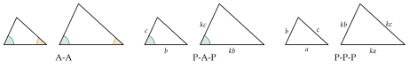
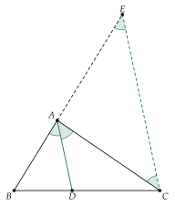
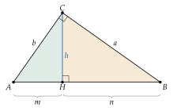

Dos polígonos P1⋯Pn y Q1⋯Qn son semejantes, y se escribe P1⋯Pn∼Q1⋯Qn, si sus ángulos correspondientes son congruentes y sus lados correspondientes son proporcionales: P1P2Q1Q2=P2P3Q2Q3=⋯=PnP1QnQ1=k. El número k>0 es la razón de semejanza. Si k=1, los polígonos son congruentes.
Para polígonos de más de tres lados, ninguna de las dos condiciones implica la otra: un cuadrado y un rectángulo no cuadrado tienen los ángulos congruentes pero no son semejantes; un cuadrado y un rombo no cuadrado tienen los lados proporcionales y tampoco lo son. En los triángulos la situación es mucho mejor.
Si los ángulos de un triángulo son respectivamente congruentes con los de otro, los triángulos son semejantes.
Sean △ABC y △DEF con ∠A≅∠D, ∠B≅∠E, ∠C≅∠F.
Si AB=DE, los triángulos son congruentes por A-L-A.
Si no, supongamos DE<AB y sean E′∈AB y F′∈AC con AE′=DE y AF′=DF.
Por L-A-L, △AE′F′≅△DEF, y entonces ∠AE′F′≅∠E≅∠B.
Estos son ángulos correspondientes para las rectas E′F′ y BC con la transversal AB, así que E′F′∥BC.
Por Thales, ABAE′=ACAF′, es decir, ABDE=ACDF.
Repitiendo el argumento desde el vértice B se obtiene ABDE=BCEF.
Los tres lados son proporcionales y △ABC∼△DEF.
Si dos ángulos de un triángulo son congruentes con dos ángulos de otro, los triángulos son semejantes. En particular:
dos triángulos rectángulos con un ángulo agudo congruente son semejantes;
toda paralela a un lado de un triángulo determina un triángulo semejante al original.
Por el Corolario 3.5.2, los terceros ángulos también son congruentes. Para (ii), si DE∥BC, los ángulos correspondientes ∠ADE≅∠B y ∠AED≅∠C.
Si dos lados de un triángulo son proporcionales a dos lados de otro y los ángulos comprendidos son congruentes, los triángulos son semejantes: si ABDE=ACDF y ∠A≅∠D, entonces △ABC∼△DEF.
Si la razón es 1, es L-A-L. Si no, supongamos DE<AB y sean E′∈AB, F′∈AC con AE′=DE y AF′=DF. Por L-A-L, △AE′F′≅△DEF. Por hipótesis, ABAE′=ACAF′, y por el recíproco de Thales (en su forma con los lados completos, que se obtiene descomponiendo), E′F′∥BC. Por el Corolario 6.3.3(ii), △AE′F′∼△ABC, y por tanto △DEF∼△ABC.
Si los tres lados de un triángulo son proporcionales a los tres lados de otro, los triángulos son semejantes.
Sea ABDE=BCEF=ACDF=k, con k<1 (si k=1 es L-L-L; si k>1 se intercambian los papeles). Sean E′∈AB con AE′=DE y F′∈AC con AF′=DF. Entonces ABAE′=ACAF′=k, y por P-A-P, △AE′F′∼△ABC con razón k; en particular E′F′=kBC=EF. Así △AE′F′≅△DEF por L-L-L, y △DEF∼△ABC.

Si △ABC∼△DEF con razón k, entonces las alturas, medianas y bisectrices correspondientes están en la misma razón k, los perímetros también, y las áreas están en la razón k2.
Sean AH y DK las alturas desde A y D.
Los triángulos rectángulos △ABH y △DEK tienen ∠B≅∠E, luego son semejantes (A-A) y AHDK=ABDE=k.
(Para medianas y bisectrices se razona igual, con P-A-P y A-A respectivamente.) Para las áreas, A(△ABC)A(△DEF)=21BC⋅AH21EF⋅DK=k⋅k=k2.
Cambie la razón k y mueva los puntos: las longitudes se multiplican por k y las áreas por k².
Cuenta la tradición que Thales midió la altura de la gran pirámide comparando su sombra con la de un bastón vertical. Si un bastón de 1,5 m proyecta una sombra de 2 m y, a la misma hora, la sombra de un edificio mide 36 m, ¿cuánto mide el edificio?
Los rayos del Sol son (prácticamente) paralelos, así que los triángulos formados por cada objeto vertical y su sombra tienen un ángulo recto y el ángulo de elevación del Sol congruentes: son semejantes por A-A. Entonces 36h=21,5 y h=27 m.
La bisectriz de un ángulo de un triángulo divide al lado opuesto en segmentos proporcionales a los lados adyacentes: si AD es la bisectriz desde A en △ABC, entonces DCBD=ACAB.
Trazamos por C la paralela a AD, que corta a la recta AB en un punto E con E−A−B (se cortan porque AB corta a AD).

Como AD∥EC: ∠AEC≅∠BAD (correspondientes) y ∠ACE≅∠DAC (alternos internos). Como ∠BAD≅∠DAC, resulta ∠AEC≅∠ACE, y el triángulo △AEC es isósceles: AE=AC. Aplicando Thales al triángulo △BEC con la paralela AD: DCBD=AEBA=ACAB.
Si D∈BC cumple DCBD=ACAB, entonces AD es la bisectriz de ∠A.
Sea AD′ la bisectriz. Por el teorema, D′CBD′=ACAB=DCBD. Componiendo, D′CBC=DCBC, de donde D′C=DC y D′=D.
Si AB=AC, la bisectriz del ángulo exterior en A corta a la recta BC en un punto D′ exterior al segmento BC tal que D′CD′B=ACAB.
La demostración es análoga: se traza por C la paralela a la bisectriz exterior, que corta a AB en E, y se prueba que △AEC es isósceles. Thales en el triángulo △BAD′ da D′CD′B=AEAB=ACAB. (Si AB=AC, la bisectriz exterior es paralela a BC, como pide el ejercicio 14 del capítulo 3.)
En △ABC, AB=6, AC=9 y BC=10. La bisectriz desde A corta a BC en D. Halle BD y DC.
DCBD=96=32 y BD+DC=10. Por la suma de antecedentes y consecuentes, 2BD=3DC=510=2, así que BD=4 y DC=6.
Sea △ABC rectángulo en C, con catetos a=BC, b=AC, hipotenusa c=AB, y sea H el pie de la altura desde C, con h=CH, m=AH y n=HB. Entonces:
los triángulos △ACH, △CBH y △ABC son semejantes;
b2=mc y a2=nc (cada cateto es media proporcional entre la hipotenusa y su proyección);
h2=mn (la altura es media proporcional entre las proyecciones);
ab=ch.
(i) △ACH y △ABC son rectángulos (en H y en C) y comparten el ángulo agudo ∠A: son semejantes por A-A, con la correspondencia ACH↔ABC. Del mismo modo △CBH∼△ABC con CBH↔ABC (comparten ∠B). Por transitividad, △ACH∼△CBH, con ACH↔CBH.

(ii) De △ACH∼△ABC: ACAH=ABAC, es decir, bm=cb y b2=mc. Igual a2=nc.
(iii) De △ACH∼△CBH: CHAH=BHCH, es decir, h2=mn.
(iv) Es el doble del área calculado de dos maneras: 2ab=2ch.
En todo triángulo rectángulo, el cuadrado de la hipotenusa es igual a la suma de los cuadrados de los catetos: c2=a2+b2.
El pie H está entre A y B (los ángulos ∠A y ∠B son agudos), así que m+n=c. Sumando las dos igualdades de (ii): a2+b2=nc+mc=(m+n)c=c2.
Arrastre los extremos de los catetos: el área del cuadrado sobre la hipotenusa es la suma de las otras dos.
Si en un triángulo △ABC se cumple c2=a2+b2, el triángulo es rectángulo en C.
Construimos un triángulo rectángulo △DEF con catetos EF=a y DF=b. Por Pitágoras, su hipotenusa mide a2+b2=c. Por L-L-L, △ABC≅△DEF, y ∠C≅∠F es recto.
Los números 3,4,5 cumplen 32+42=52, así que un triángulo con esos lados es rectángulo; los agrimensores egipcios, según se cuenta, lo usaban para trazar ángulos rectos con una cuerda de doce nudos. En general, para enteros p>q>0 los números p2−q2, 2pq y p2+q2 forman una terna pitagórica: (p2−q2)2+(2pq)2=p4+2p2q2+q4=(p2+q2)2.
Sea △ABC y H el pie de la altura desde C. Si ∠A es agudo, a2=b2+c2−2c⋅AH; si ∠A es obtuso, a2=b2+c2+2c⋅AH; si es recto, a2=b2+c2.
Sea h=CH y x=AH. Si ∠A es agudo, H está en el rayo AB y HB=∣c−x∣; por Pitágoras en △AHC y △BHC, h2=b2−x2 y a2=h2+(c−x)2=b2−x2+c2−2cx+x2=b2+c2−2cx. Si ∠A es obtuso, H está en el rayo opuesto, HB=c+x, y la misma cuenta da a2=b2+c2+2cx.
En △ABC: el ángulo ∠C es agudo, recto u obtuso según que c2 sea menor, igual o mayor que a2+b2.
Es el lema (aplicado al vértice C), junto con la tricotomía: si ∠C es agudo, c2<a2+b2; si es recto, igual; si es obtuso, mayor. Como los tres casos se excluyen y agotan todas las posibilidades, valen también los recíprocos.
¿Es acutángulo, rectángulo u obtusángulo el triángulo de lados 7, 8 y 11? El lado mayor es 11 y 112=121>49+64=113: el ángulo opuesto al lado 11 es obtuso, y el triángulo es obtusángulo.
En todo paralelogramo, la suma de los cuadrados de las diagonales es igual a la suma de los cuadrados de los cuatro lados: AC2+BD2=2(AB2+BC2).
Los ángulos ∠A y ∠B son suplementarios; si uno es recto, el paralelogramo es un rectángulo y el resultado es Pitágoras dos veces.
Si no, digamos ∠B obtuso y ∠A agudo.
Sea H el pie de la perpendicular desde D a AB y K el pie desde C.
Los triángulos rectángulos △AHD y △BKC son congruentes (hipotenusa y ángulo agudo), así que AH=BK=x.
Por el lema, en △ABD (ángulo agudo en A) y en △ABC (ángulo obtuso en B): BD2=AB2+AD2−2AB⋅x,AC2=AB2+BC2+2AB⋅x. Sumando y usando AD=BC: AC2+BD2=2AB2+2BC2.
Si ma es la mediana desde A en △ABC, entonces b2+c2=2ma2+2a2,es decir,ma2=42b2+2c2−a2.
Si M es el punto medio de BC y D el simétrico de A respecto a M, entonces ABDC es un paralelogramo (sus diagonales se bisecan), con lados b, c y diagonales a y 2ma. Por la ley del paralelogramo, a2+4ma2=2b2+2c2.
Si un triángulo tiene lados a, b, c y semiperímetro s=2a+b+c, su área es A=s(s−a)(s−b)(s−c).
Sea ∠A agudo (todo triángulo tiene un ángulo agudo; elegimos llamarlo A) y H el pie de la altura desde C, con x=AH (con signo negativo si H cae fuera, lo que no cambia las cuentas siguientes).
Del lema, x=2cb2+c2−a2, y la altura es h con h2=b2−x2.
Entonces 4c2h2=4b2c2−(b2+c2−a2)2=(2bc−b2−c2+a2)(2bc+b2+c2−a2)=(a2−(b−c)2)((b+c)2−a2)=(a−b+c)(a+b−c)(b+c−a)(b+c+a). Con a+b+c=2s: a−b+c=2(s−b), a+b−c=2(s−c) y b+c−a=2(s−a).
Así 4c2h2=16s(s−a)(s−b)(s−c), y A2=4c2h2=s(s−a)(s−b)(s−c).
El triángulo de lados 13, 14, 15 tiene s=21 y A=21⋅8⋅7⋅6=7056=84. Sus alturas son h13=13168, h14=12 y h15=556.
Próxima semana: La circunferencia: tangentes y ángulos inscritos